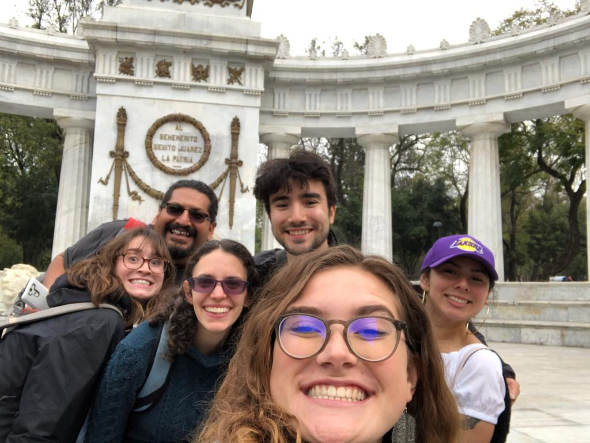
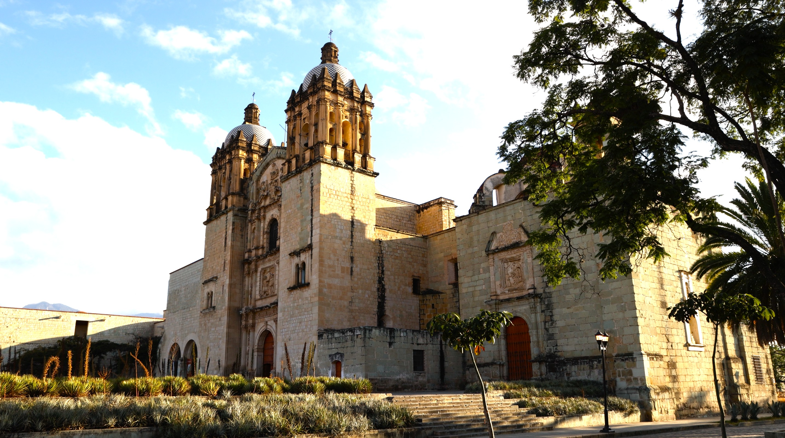
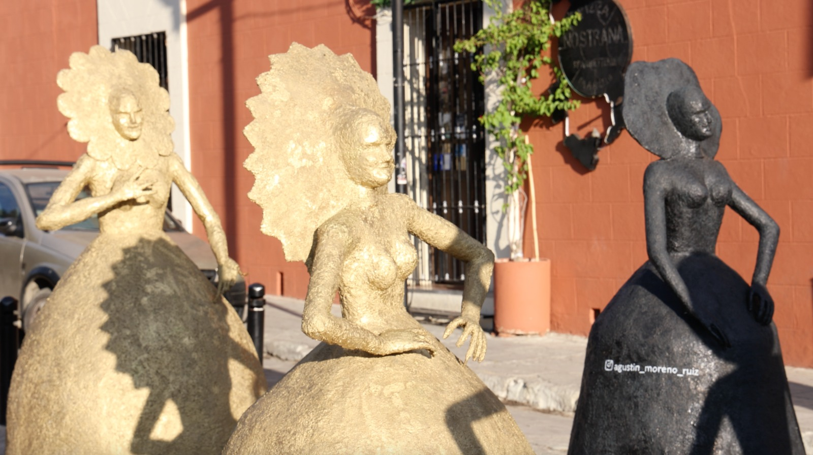

e


Theory and Practice of Cultural Rights: Community Centered Learning with Museos Comunitarios

Offered by the Union of Community Museums of Oaxaca, a network of 20 community museums that defends local ways of life and the right to self-determination.
This program focuses on the theory and practice of cultural rights by working with Community Museums, part of a Pan-American movement to preserve and celebrate traditional cultures. It combines coursework with experiential learning in which students work with residents in indigenous villages to develop and facilitate expressive arts workshops. With an emphasis on reflection, they build on and integrate concepts such as the processes of colonial domination, resistance, decolonization, defense of cultural rights and practices and the historical and political context of Oaxaca today.
Co-sponsored by Kalamazoo College’s Center for International Programs and the Center for Civic Engagement.
The setting: Oaxaca City
As a World-Heritage site, Oaxaca City is defined by its vibrant indigenous heritage, well-preserved colonial architecture, and wealth of traditional and contemporary artist expression. Its markets and crafts, famous cuisine, pre-Hispanic archaeological sites, and urban art come together in an unusual opportunity to experience the contrasts of Mexican culture.

Photo Credit: Bryan Worthington

Photo Credit: Bryan Worthington
What the program also includes:
• Home stay with local families
• Option to take afternoon classes of salsa or yoga
• 3-day trip to iconic sites in Mexico City
• Support of personalized language instruction if needed